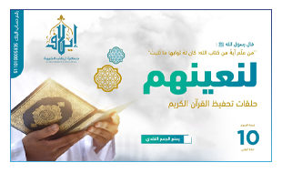

إذاعات
من نحن
مصدر خيرية هذه الأمة، و منبع عزها وفخرها ،وهو مبعث الهدى والصلاح والاستقامة، ولا نزال بخير ما ارتبطت أعمالنا به ، وتربت نفوسنا على تعظيمه وحفظه وتعاهده وإن الاشتغال بكتاب الله تعالى
عرض المزيداشارات
قران , الراشد , سورة الكهف , السديسي منصور السالمي , البقرة , القران الكريم تفسير ايات , القران mp3